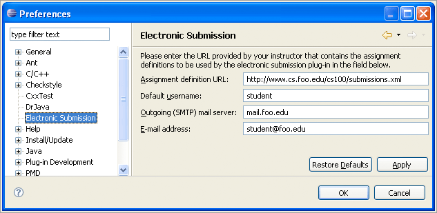

Submission Plug-In Preferences
Before you can begin using the Eclipse plug-in to submit projects through the
IDE, you need to enter some information into the Eclipse preferences. To
access the plug-in settings, choose Window/Preferences... from the
Eclipse main menu and select Electronic Submission from the tree.
The preferences page will look something like the following:

Settings
The Web-CAT plug-in preferences page has four fields that the user can specify.
The first field is required--the other three are optional.
-
Assignment definition URL: This is the URL to the XML file
that contains the assignment definitions. This URL can use any protocol to
which Java can open a connection and read data--http and
file are likely to be the most common. Note that if a local file is
to be used, you must use the file protocol--entering only the path
to the file is not sufficient.
-
Default username: This property is a convenience for the
user--the username specified here will be automatically entered in the
submission wizard when it is opened. The user can still enter a different
username at that point, if he or she wishes to do so.
-
Outgoing (SMTP) mail server: The outgoing mail server that
should be used to submit assignments that use the mailto protocol
in their transports. If you do not intend to use mailto transports,
then you may leave this field blank.
-
E-mail address: The e-mail address from which mail should be
sent when submitting to assignments that use the mailto protocol.
This will typically be the student's e-mail address. As with the previous
field, if no mailto transports are being used, this field can be
left blank.